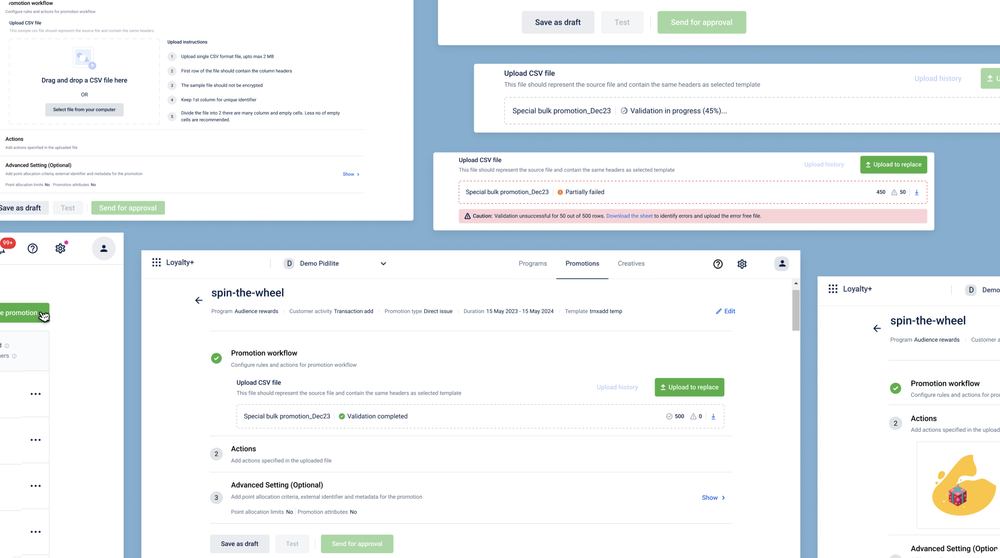
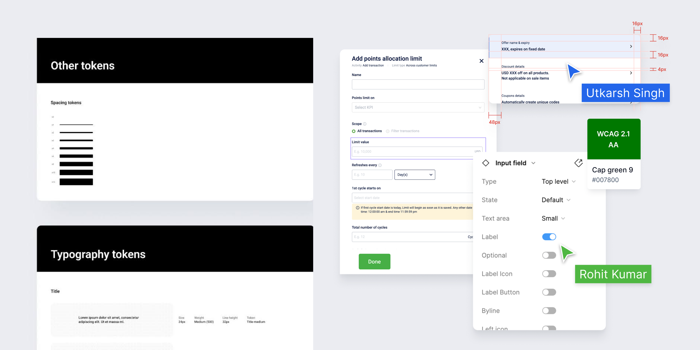
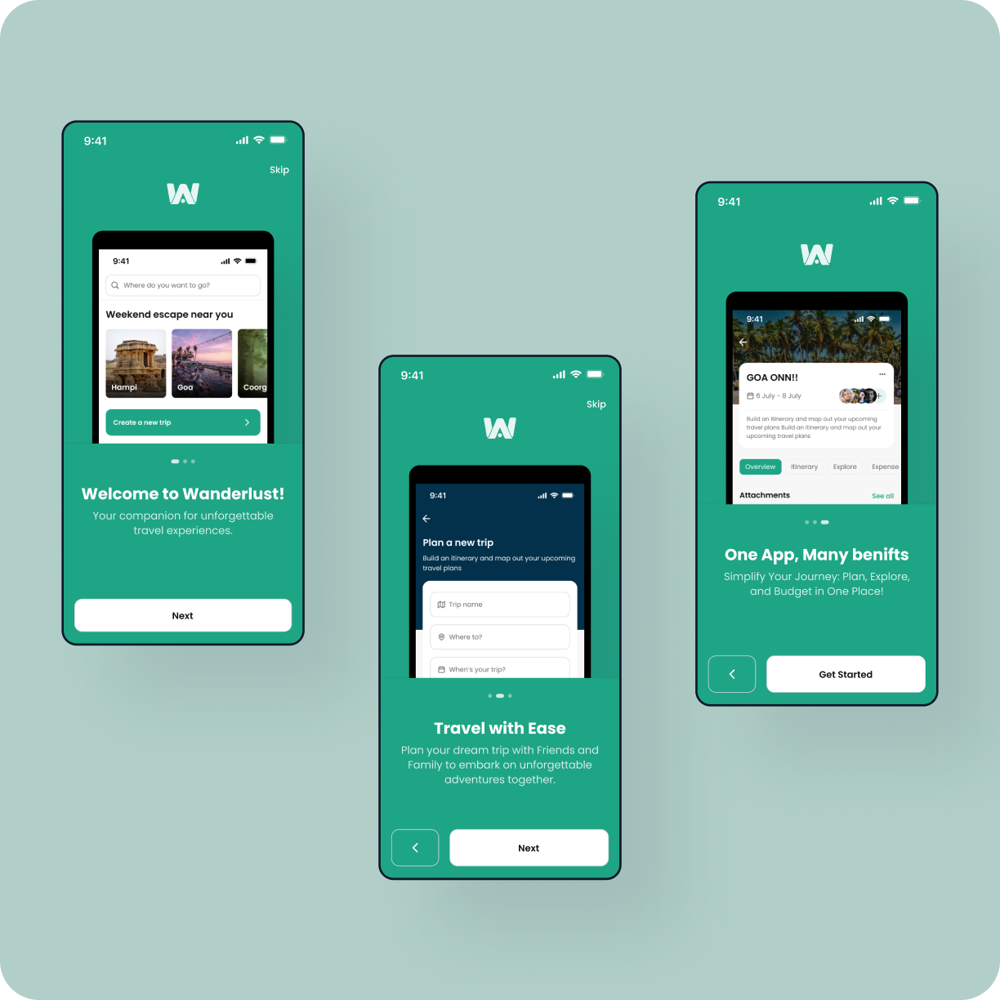
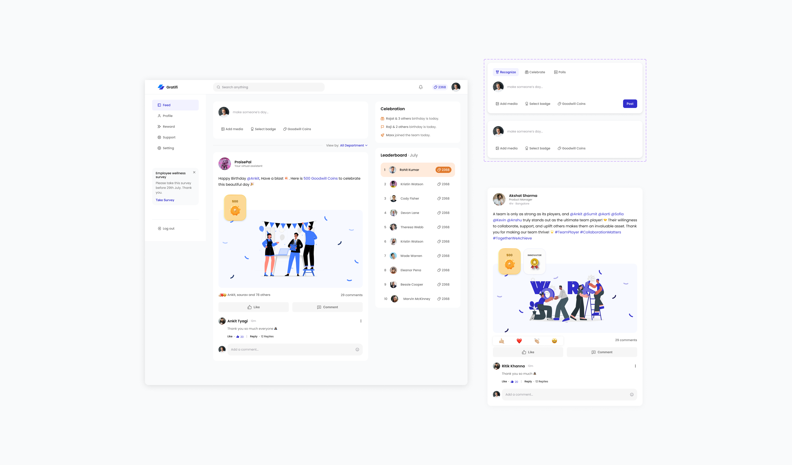

Cutting 57% of the clicks out of running infrastructure for 30+ companies
Facets' Control Plane is where engineering teams run infrastructure their businesses depend on. I redesigned the navigation IA, unified a fragmented design system, and shipped dark mode from scratch — designed and built by me, in code, in the live product.
View case study


Automating loyalty promotion creation
Turning 1,000-line rule files into a simple CSV upload for creating and managing loyalty promotions.
View case study
Building a 100+ component design system
Solo-designed component library, patterns, tokens, and usage guidelines for a SaaS platform.
View case study
Wanderlust: travel planning app
An app that helps users plan itineraries, split expenses, access group tickets, and discover destinations.
View case study
Gratifi: employee recognition platform
A platform for spreading positivity, recognizing accomplishments, and nurturing camaraderie at work.
View case study
Enhancing the search experience of Skill-Lync
Redesigning search and filtering across job-guaranteed programs, career programs, and courses.
View case study